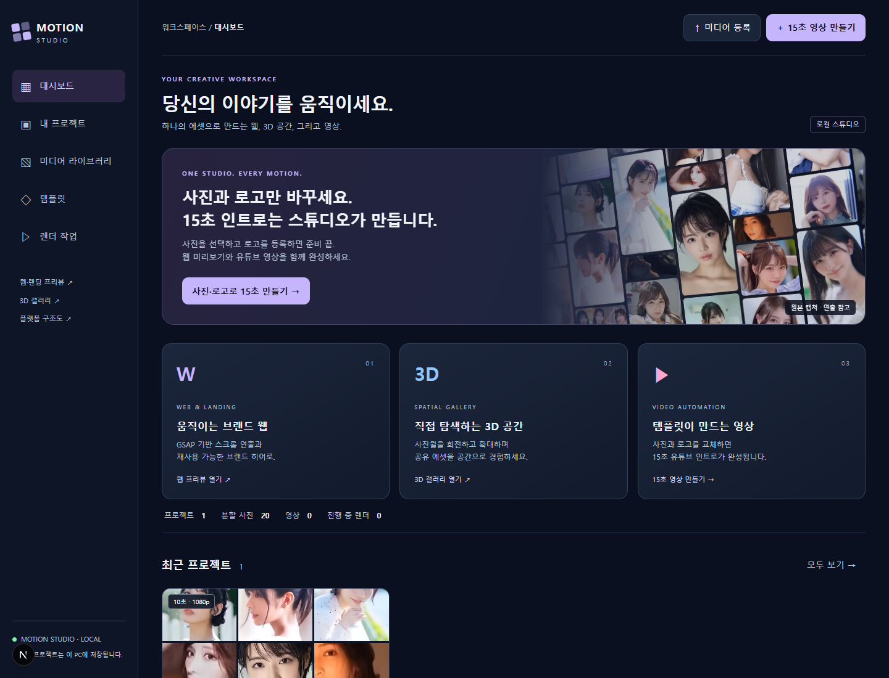
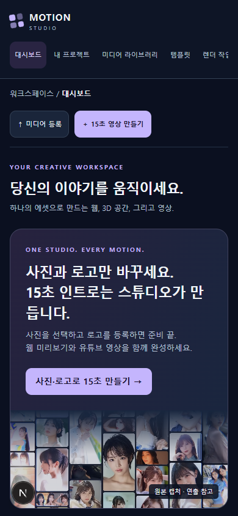
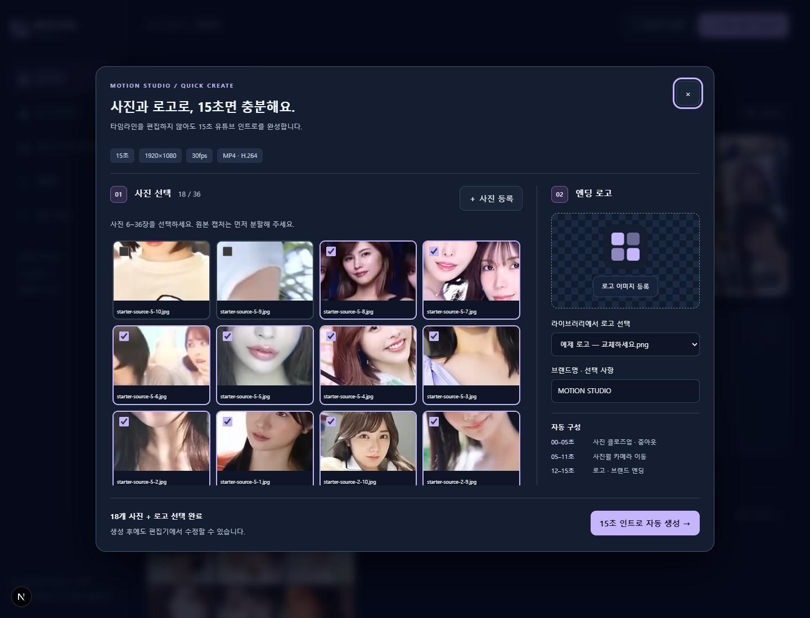
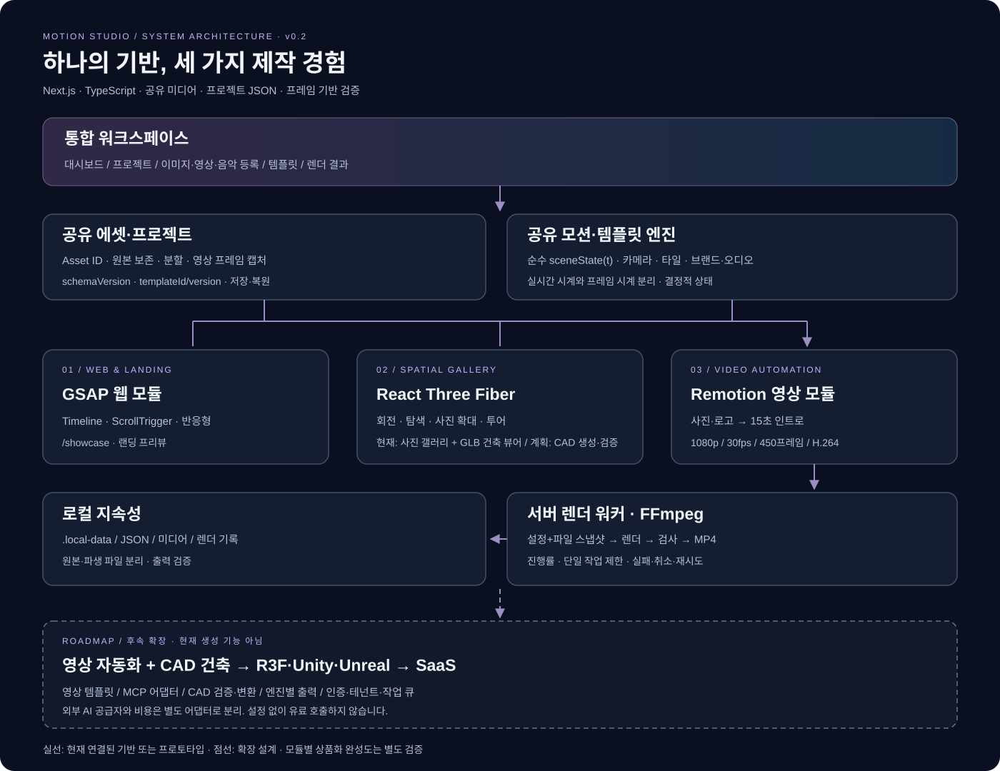
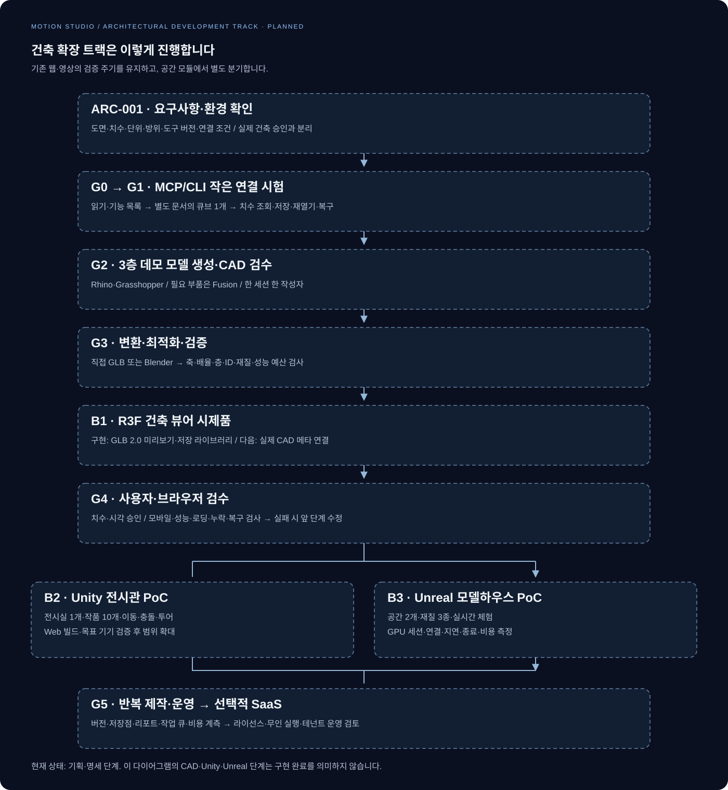
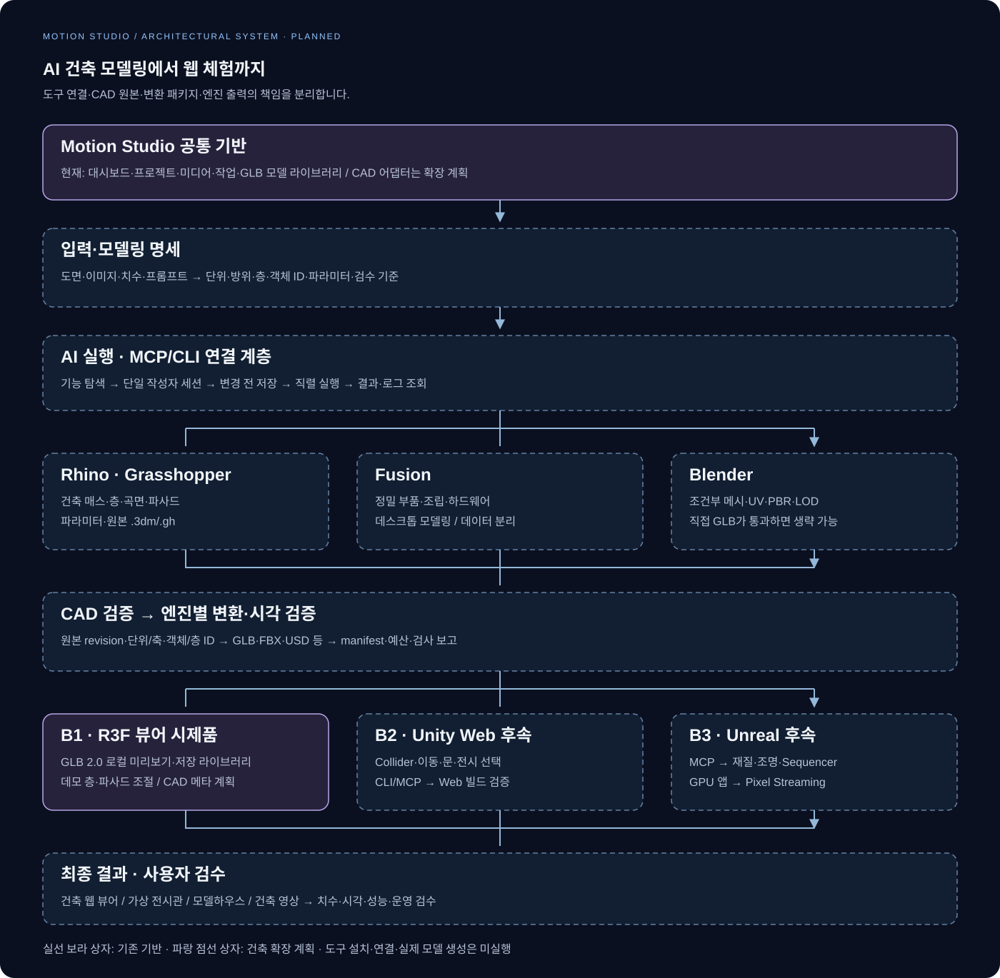

MOTION STUDIO / DESIGN REVIEW · v0.2
하나의 기반, 세 가지 제작 경험.
실제 구현 화면을 바탕으로 정리한 디자인 시안입니다. 웹·3D 프리뷰와 15초 자동 생성, 공유 미디어와 렌더 결과를 하나의 작업 공간에 연결합니다.
배경 #0B1020카드 #151E30강조 #C4B5FD시스템 한글 글꼴
통합 대시보드


사진·로고 기반 빠른 제작
사진 선택과 로고 등록 후 자동으로 프로젝트 저장과 15초 렌더를 시작합니다. 예제 로고는 실제 브랜드 로고로 교체합니다.

플랫폼 구조도

AI 건축 확장 — 기획
실제 CAD 연결·모델링 전 단계입니다. 명세와 작은 연결 검증 후 R3F 뷰어를 먼저 만들고 Unity·Unreal 체험으로 확장합니다.


건축 기획 명세